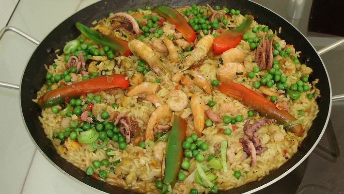
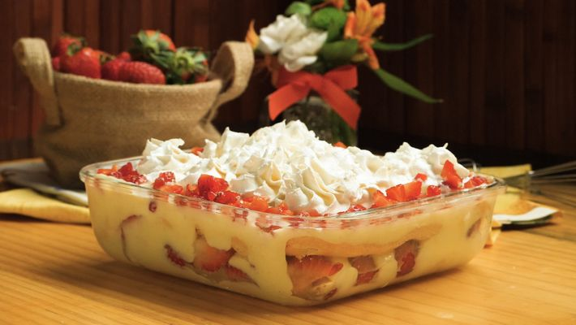
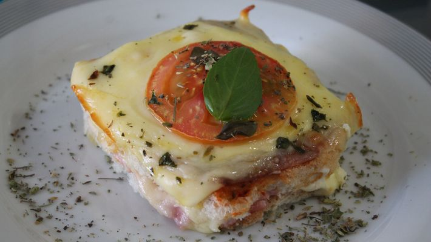

| Paella | ||
|  | ||
| Ingredientes | 3 xícaras de arroz (agulhinha ou arbório) | |
| 300 g filés de camarões médios | ||
| 200 g de camarões grandes inteiros (ou lagostins) | ||
| 250 g de lulas em aneis | ||
| Modo de preparo | Tempere as coxinhas da asa (ou filé de peito de frango ou de peixe, coelho, pato ou porco) e vá refogando em azeite, vire continuamente. Se preferir, pode ir pingando água para garantir que não ficará cru. Reserve. | |
| Pavê de Morango | ||
|  | ||
| Ingredientes | 1 pacote de bolacha maizena ou bolacha champagne | |
| 1 lata de leite condensado | ||
| 1 caixinha de creme de leite | ||
| 1 lata de leite comum | ||
| 2 gemas peneiradas | ||
| 1 colher (sopa) de farinha de trigo ou maisena | ||
| Modo de preparo | Em uma panela, coloque o leite condensado, o leite (reserve um pouco para dissolver o trigo), as
gemas peneiradas levemente batidas, a baunilha e a farinha misturada no leite reservado. Em um refratário, coloque na seguinte ordem: uma camada de bolacha (passe as bolachas no leite com açúcar rapidamente), uma camada de morangos picados, metade do creme. |
|
| Misto quente | ||
|  | ||
| Ingredientes | 12 fatias de pão de forma (sem a casca) | |
| 1/2 lata de molho de tomate pronto (coloquei 1 sache de sazon sabor do nordeste) | ||
| 6 fatias de presunto (ou a gosto) | ||
| 4 colheres de sopa de requeijão | ||
| 12 fatias de mussarela (ou a gosto) | ||
| 1/2 caixa de creme de leite | ||
| Modo de preparo | Colocar metade do molho de tomate temperado, presunto, camada de requeijão, metade da mussarela, restante do pão de forma, molho de tomate, creme de leite, mussarela, tomate em rodelas, orégano | |